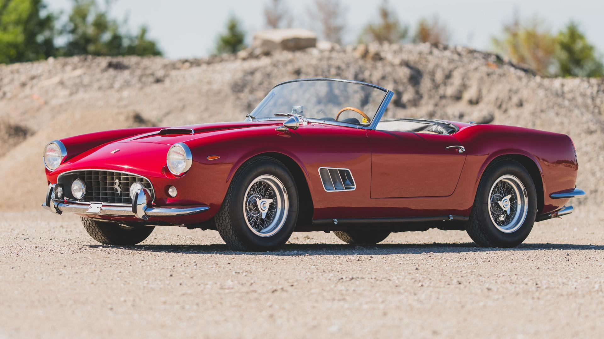

1962 Ferrari 250 California SWB

Collectible car experts Hagerty say this is likely the most original, pristine, short-wheel-base Ferrari California Spider in existence. It is the 55th of 56 SWB Spiders built and is one of only 19 with open headlights. It is also Classiche-certified and still has its original chassis, engine, gearbox, and differential. It has had only four owners over the past 50 years.
A grand touring car, the 250 GT is equipped with a 3.0-liter V-12, which pumps 243 horsepower through four gear manual transmission.
-
figure2
- Most 250 road cars share the same two wheelbases, 2,400 mm (94.5 in) for short wheelbase (SWB) and 2,600 mm (102.4 in) for long wheelbase (LWB). Most convertibles used the SWB type.
Nearly all 250s share the same Colombo Tipo 125 V12 engine. At 2,953 cc (180 cu in), it was notable for its light weight and impressive output of up to 300 PS (221 kW; 296 hp) in the Testa Rossa and GTO. The V12 weighed hundreds of pounds less than its chief competitors — for example, it was nearly half the weight of the Jaguar XK straight-6.[1] Ferrari uses the displacement of a single cylinder as the model designation.
The light V12 propelled the small Ferrari 250 racing cars to numerous victories.